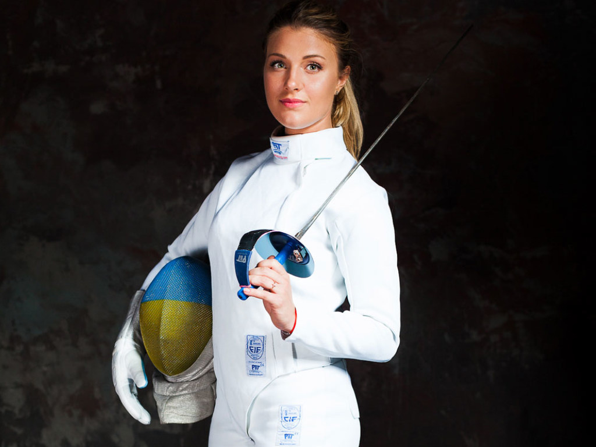
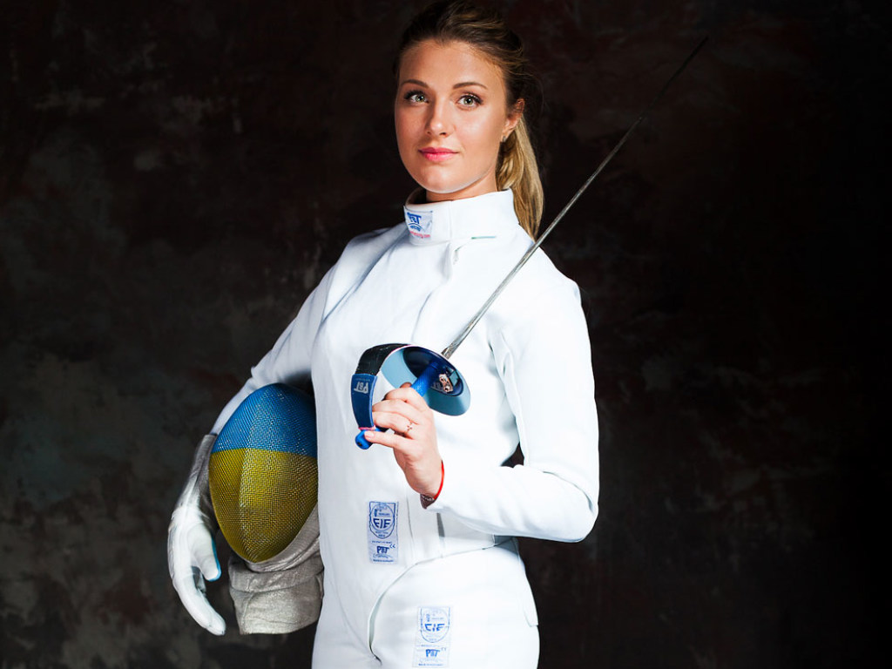

Ольга Геннадіївна Харлан (нар. 4 вересня 1990, Миколаїв) — українська фехтувальниця (шабля), олімпійська чемпіонка 2008 року у командній першості, бронзова призерка Олімпіади 2012 року, п'ятиразова чемпіонка світу (2009 року в командній першості, 2013 в індивідуальній і командній, 2014 в індивідуальній, 2017 в індивідуальній), семиразова чемпіонка Європи, ЗМСУ з фехтування, найкраща спортсменка року (2008, 2009) та найкраща спортсменка місяця (5 разів) в Україні, депутат Миколаївської міської ради. Представниця клубів «Спартак» та «Динамо» (Миколаїв), а також службовець СБУ. Входить до десятки найкращих спортсменів ФСТ «Динамо» України з олімпійських видів спорту 2012 року, очільниця світової шабельної класифікації у 2013 році. Тренери — Артем Скороход, Гарнік Давидян. Перший тренер — Анатолій Шлікар. 29 березня 2016 року ім'я Ольги Харлан було вписано у міжнародний Зал слави FIE.